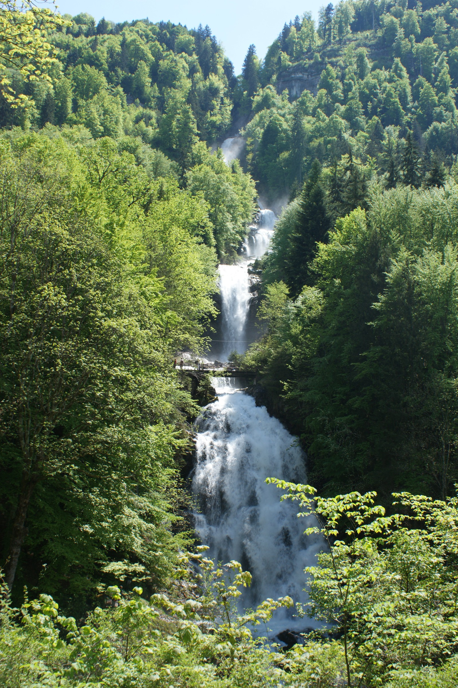
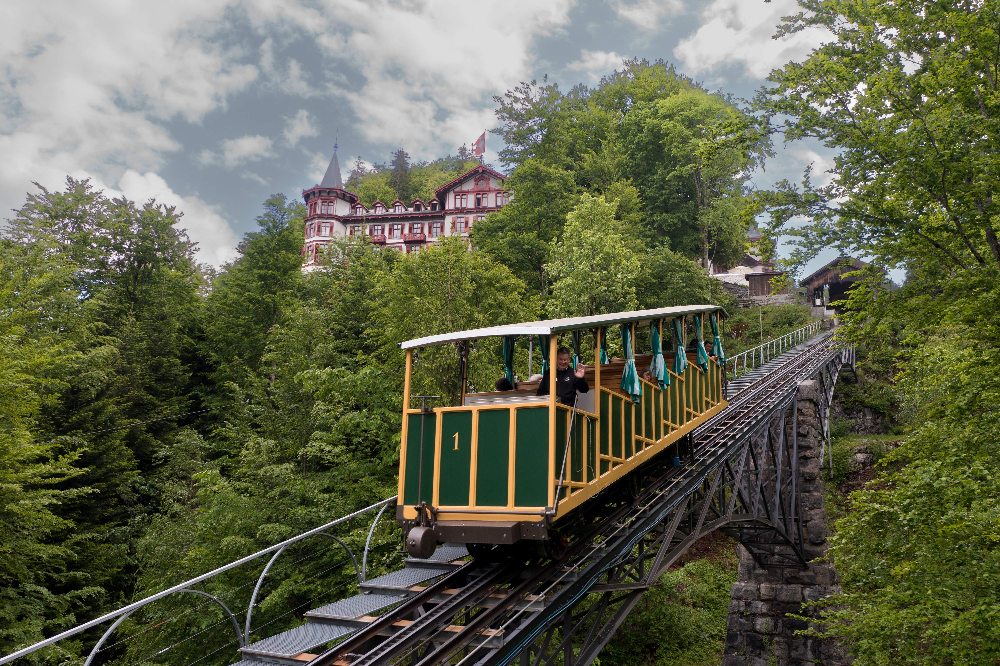

Giessbach je malebná destinace ve Švýcarsku, známá svými krásnými horami, přírodou a vodopády. Toto místo je ideální pro milovníky přírody a turistiky.
Vodopády Giessbach jsou jednou z hlavních atrakcí této oblasti. Vodopády padají z výšky 500 metrů a jsou obklopeny hustými lesy.
 Pro turisty, kteří plánují navštívit Giessbach, máme několik tipů:
Další tipy:
| Měna | Švýcarský frank (CHF) |
|---|---|
| Jazyk | Němčina, Francouzština, Italština |
| Počet obyvatel | 8,5 milionu |